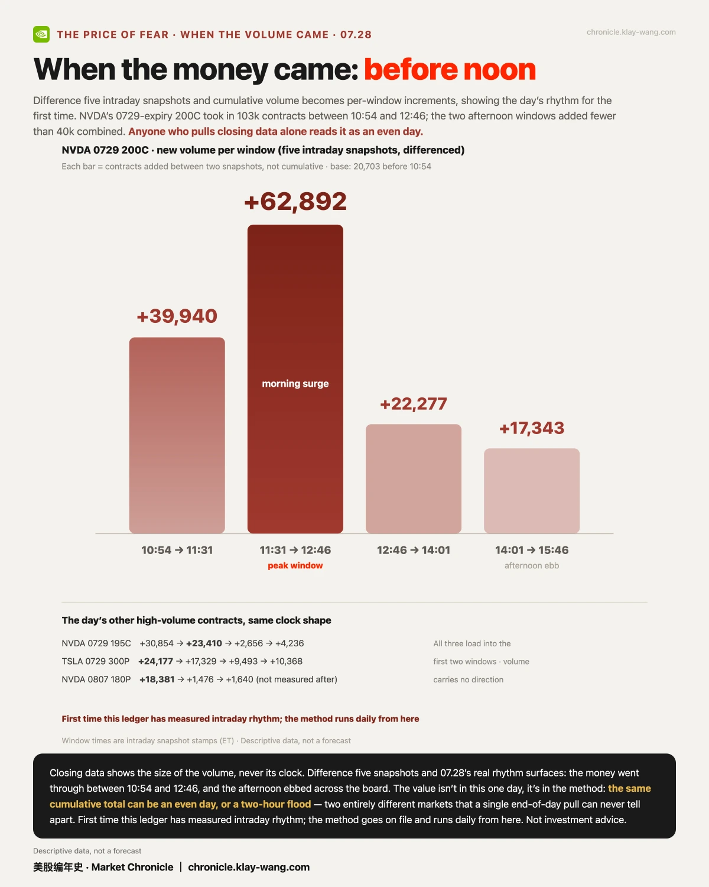
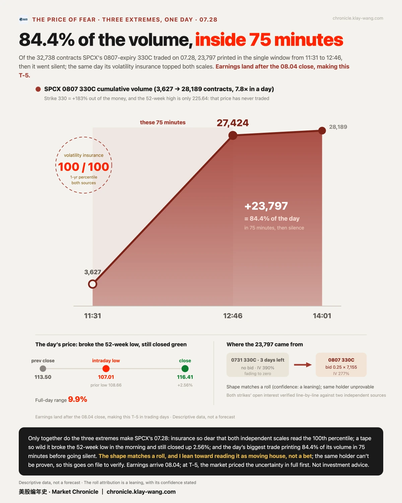
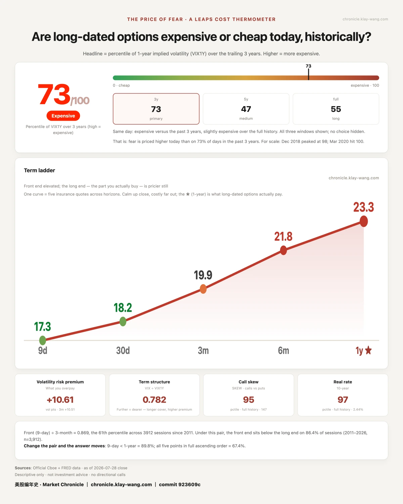

闪迪一天跌掉14%，可乐却64年新高，市场在等美联储· 07-28 · 7.27-7.31
• Storage got no bounce: SNDK fell another 14.25%, now 53% off its high; six chips red against four platforms green, and day two deepened rather than converged
• Twin records, twice unheld: Apple touched 342.89 and Coca-Cola 90.22, both all-time highs, on the same day; one closed 0.82% below, the other gave nearly all of +5.00% back to its open
• The market parked on its lines: SPY 0.30 from its put wall, Nvidia 0.08 from its flip line, a ledger record; fences from Meta ±6.98% to Apple ±3.35%, all inside 0731
🔀 Chips vs. platforms, day two
My read: the split held; what converged was only the edges, while the losing side got deeper.
Pre-market on 07-27 it was seven chips red against six platforms green. At the 07-28 close, chips were one barely green and six red, platforms four green and two barely red. Alphabet +2.19% and Microsoft +1.09% on one side; SanDisk −14.25% (now 53% off its high), Micron −8.85%, AMD −8.15%, Intel −5.86% on the other. Convergence happened only at the margins, and the losing side did not converge at all. Last issue said the market was chasing Nvidia's credit story, not storage's supply story; day two's closes did not overturn that. No flow data exists for the day, so this is not rotation, just the same day in opposite directions.
📈 One waited 46 years, the other 64
My read: a record high is two jobs, touching it and keeping it, and on 07-28 both stocks managed only the first.
Two stocks with nothing in common touched their own history on 07-28: Apple at 342.89, the highest of 11,497 daily bars since its 1980 listing; Coca-Cola at 90.22, the highest since 1962. By the close the story had turned: Apple finished 0.82% below at 340.08, stopping $0.35 under the media's $5-trillion market-cap line at 340.43 (recorded, not endorsed); Coca-Cola went further, up 5.00% on the day with nearly all of it in the opening jump, then walked back from a 64-year high all session to close at 88.27, its opening price.
Coca-Cola's jump had a stated reason: Q2 earnings landed before the 07-28 open, adjusted EPS of $0.97 beating the $0.93 estimate, with trademark Coke volume up 5%, the strongest quarter in 17 years, and full-year guidance raised (per Motley Fool, Benzinga). Earnings explain the touching; they don't explain the not-keeping: stock volume 2.1×, options at 184,602 contracts, 2.51× normal, and still no late-day bid.
Apple's $0.35 shortfall sits on a longer road. Ten-year total return near 883% with dividends (per Forbes), in three layers: earnings growth, a re-rating from 11–16× in the first seven years to above 30× (per TIKR), and over $700 billion of buybacks shrinking the share count from 22.3 to 15.0 billion, roughly a third. The reasons live in the financial structure: services at 26% of revenue (past $100B for the first time in FY2025), record 46.9% gross margin versus under 40% in 2017, services margin 75% against hardware's 36%. What got re-priced was never the next phone; it was the identity shift from hardware cyclical to ecosystem. The $5-trillion line Apple stopped $0.35 under is a quote on that identity.
⏱ When the volume came
My read: the same cumulative total can be an even day or a two-hour flood, and closing data alone can never tell them apart.
Difference five intraday snapshots and NVDA's 0729 200C shows its clock: 20,703 contracts before 10:54, +39,940 into 11:31, +62,892 into 12:46, then fewer than 40k across the whole afternoon. The day's other high-volume contracts traded the same shape. First time this ledger has measured intraday rhythm; the method goes on file and runs daily.
🚧 The FOMC and four fences
My read: fence width is the insurance price of uncertainty, and the market ranks Meta dearest, Apple cheapest.
The FOMC decides at 2:00 pm ET on 07-29; Microsoft and Meta report after that close, Apple and Amazon after Thursday's. To the 0731 expiry the options market quotes Meta ±6.98%, Microsoft ±6.17%, Amazon ±5.89%, Apple ±3.35%. Term structure agrees: Microsoft 42.68 front vs 35.70 long, Meta 50.10 vs 42.71, the steepest two of all 17 names. On the index side, SPY's 740/750 walls stood for a sixth straight session; 07-28 broke the 740 wall by 4 points intraday and closed back above it at 740.86. The pre-open structure photo says it plainer: SPY's spot 0.30 from its put wall, the flip line 0.34 from the call wall, Nvidia within 0.08 of its flip line (this ledger's closest on record), QQQ's two walls merged at 700. The market parked on its own lines. The ends of a fence are prices, not predictions; we settle at the 07-31 close.
🌡 Thermometer: 73 / 100
One-year insurance is running dear: VIX 1Y at 23.29 ranks in the 73rd percentile of the past three years (47th of five, 55th of all history), with the decision and four reports still ahead. It does not predict direction; it prices the fear. Right now that price is higher than about seven in ten days of the past three years.






No investment advice. No direction calls. No market timing.